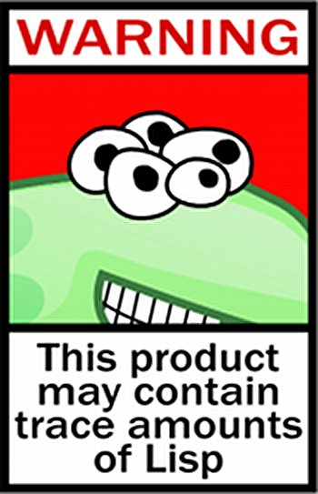

stembase.space Emacs
Table of Contents
- Introduction
- Installation
- Dependencies for:
- Some notes
- Scratch startup screen fun
- Theme
- Basic Interface Settings
- Projectile
- Dashboard
- Modeline
- The terminal
- Moving around emacs
- a prerequisite for others packages
- scrolling and why does the screen move
- which-key and why I love emacs
- windows,panes and why I hate other-window
- swiper and why is the default search so lame
- buffers and why I hate list-buffers
- line numbers and programming
- ido and why I started using helm
- avy and why it’s the best thing in existence
- Text manipulation
- Minor conveniences
- Kill ring
- AUCTex
- Programming
- Org-mode
- Git integration
- Remote editing
- Diminishing modes
- Instant messaging
- Personal Additions

Introduction
This is the “official” stembase.space Emacs initialization files repository for setting up your Emacs. It is a hacked version of Dawid Eckert’s (Berlin) Uncle Dave’s Emacs which should be all we need to get your Emacs environment set up.
Installation
Quick Installation
To start, open an terminal, create a directory in your top home directory, maybe call it, my-emacs-init, then cd into it and clone thusly:
git clone https://github.com/y-stem/y-stem.emacs.d.git .emacs.d
This should create a sub-directory .emacs.d/.
Next. cd back up to your top home and check to see if you already have an existing .emacs.d/ directory—or an individual .emacs file. If so, move them elsewhere out of the top home—or just delete them.
Now do mkdir .emacs.d in the top home and copy the one directory and the two files below into .emacs.d/.
img/ init.el config.org ...
The first time you launch Emacs should be from the command line, probably best with debugging help to see if any errors happen
>emacs --debug-init
On that first startup you will get a good amount of packages being downloaded and set up, so be patient and let it complete. You might see warnings and errors being displayed as well, those should be safe to ignore, especially when you kill Emacs and restart it for the second time.
This org file is the main configuration file, so take a look at it and try to grok as much of it as you can.
Dependencies for:
TRAMP
From the package manager:
sudo, properly configured for your user.
Programming
Package manager
clang, for c/c++ completion.sbcl, for clisp completion and repl.virtualenv, for python completion.lua, for obvious reasons.
pip
pip install jedi flake8 autopep8, here, a one line install.
Some notes
On use-package some more
We utilize use-package to handle downloading and configuring other packages painlessly.
With init.el written the way it is, emacs checks for the presence of use-package
on launch and downloads it and installs if necessary.
el-Get is too old and not configurable enough.
On the format of the configuration
As you may have noticed, as you scroll down my bit of prose, this is the configuration file itself.
This configuration is written in org-mode, which is a great emacs package and a great markup language.
On launch, this file is being sourced into ~/.emacs.d/init.el, the prose is being automatically
stripped (as to not affect performance) and the remaining config.el file is parsed.
This is also the reason why your org-mode configuration file is never called init.org.
On the keybindings
I do my best to not pollute keymaps with my own keybindings. Most of the bindings I defined myself utilize the Super key (noted as s-).
This is the least used modifier key together with Shift (noted as S-), thus using those, chances are all the bindings you already know
and love are going to work flawlessly. For all the others, just keep on reading.
Scratch startup screen fun
;; Set initial *scratch* buffer message (setq initial-scratch-message (with-temp-buffer (insert-file-contents (expand-file-name "~/.emacs.d/img/scratch-ascii-art.txt" user-emacs-directory)) (buffer-string)))
Theme
The most important part of every configuration.
A nice theme
My new favourite one I guess, really decent default values.
(use-package zerodark-theme :ensure t :init (load-theme 'zerodark t))
Some customization
The theme is great, really, but some of the concepts just suck with powerline.
(let ((class '((class color) (min-colors 89))) (default (if (true-color-p) "#abb2bf" "#afafaf")) (light (if (true-color-p) "#ccd4e3" "#d7d7d7")) (background (if (true-color-p) "#282c34" "#333333")) (background-dark (if (true-color-p) "#24282f" "#222222")) (background-darker (if (true-color-p) "#22252c" "#222222")) (mode-line-inactive (if "#1c2129" "#222222")) (mode-line-active (if (true-color-p) "#6f337e" "#875f87")) (background-lighter (if (true-color-p) "#3a3f4b" "#5f5f5f")) (background-red (if (true-color-p) "#4c3840" "#5f5f5f")) (bright-background-red (if (true-color-p) "#744a5b" "#744a5b")) (background-purple (if (true-color-p) "#48384c" "#5f5f5f")) (background-blue (if (true-color-p) "#38394c" "#444444")) (bright-background-blue (if (true-color-p) "#4e5079" "#4e5079")) (background-green (if (true-color-p) "#3d4a41" "#5f5f5f")) (bright-background-green (if (true-color-p) "#3f6d54" "#3f6d54")) (background-orange (if (true-color-p) "#4a473d" "#5f5f5f")) (hl-line (if (true-color-p) "#2c323b" "#333333")) (grey (if (true-color-p) "#cccccc" "#cccccc")) (grey-dark (if (true-color-p) "#666666" "#666666")) (highlight (if (true-color-p) "#3e4451" "#5f5f5f")) (comment (if (true-color-p) "#687080" "#707070")) (orange (if (true-color-p) "#da8548" "#d7875f")) (orange-light (if (true-color-p) "#ddbd78" "#d7af87")) (red (if (true-color-p) "#ff6c6b" "#ff5f5f")) (purple (if (true-color-p) "#c678dd" "#d787d7")) (purple-dark (if (true-color-p) "#64446d" "#5f5f5f")) (blue (if (true-color-p) "#61afef" "#5fafff")) (blue-dark (if (true-color-p) "#1f5582" "#005f87")) (green (if (true-color-p) "#98be65" "#87af5f")) (green-light (if (true-color-p) "#9eac8c" "#afaf87")) (peach "PeachPuff3") (diff-added-background (if (true-color-p) "#284437" "#284437")) (diff-added-refined-background (if (true-color-p) "#1e8967" "#1e8967")) (diff-removed-background (if (true-color-p) "#583333" "#580000")) (diff-removed-refined-background (if (true-color-p) "#b33c49" "#b33c49")) (diff-current-background (if (true-color-p) "#29457b" "#29457b")) (diff-current-refined-background (if (true-color-p) "#4174ae" "#4174ae"))) (custom-theme-set-faces 'zerodark `(fancy-battery-charging ((,class (:background ,background-blue :height 1.0 :bold t)))) `(fancy-battery-discharging ((,class (:background ,background-blue :height 1.0)))) `(fancy-battery-critical ((,class (:background ,background-blue :height 1.0)))) ;; mode line stuff `(mode-line ((,class (:background ,background-blue :height 1.0 :foreground ,blue :distant-foreground ,background-blue :box ,(when zerodark-use-paddings-in-mode-line (list :line-width 6 :color background-blue)))))) `(mode-line-inactive ((,class (:background ,background-blue :height 1.0 :foreground ,default :distant-foreground ,background-blue :box ,(when zerodark-use-paddings-in-mode-line (list :line-width 6 :color background-blue)))))) `(header-line ((,class (:inherit mode-line-inactive)))) `(powerline-active0 ((,class (:height 1.0 :foreground ,blue :background ,background-blue :distant-foreground ,background-blue)))) `(powerline-active1 ((,class (:height 1.0 :foreground ,blue :background ,background-blue :distant-foreground ,background-blue)))) `(powerline-active2 ((,class (:height 1.0 :foreground ,blue :background ,background-blue :distant-foreground ,background-blue)))) `(powerline-inactive0 ((,class (:height 1.0 :foreground ,blue :background ,background-blue :distant-foreground ,background-blue)))) `(powerline-inactive1 ((,class (:height 1.0 :foreground ,blue :background ,background-blue distant-foreground ,background-blue)))) `(powerline-inactive2 ((,class (:height 1.0 :foreground ,blue :background ,background-blue :distant-foreground ,background-blue)))) `(dashboard-heading-face ((,class (:background ,background :foreground ,blue :bold t :height 1.2)))) `(dashboard-banner-logo-title-face ((,class (:background ,background :foreground ,blue :bold t :height 1.2)))) `(widget-button ((,class (:background ,background :foreground ,default :bold nil :underline t :height 0.9)))) ;; erc stuff `(erc-nick-default-face ((,class :foreground ,blue :background ,background :weight bold))) ;; org stuff `(outline-1 ((,class (:foreground ,blue :weight bold :height 1.8 :bold nil)))) `(outline-2 ((,class (:foreground ,purple :weight bold :height 1.7 :bold nil)))) `(outline-3 ((,class (:foreground ,peach :weight bold :height 1.6 :bold nil)))) `(outline-4 ((,class (:foreground ,green-light :weight bold :height 1.5 :bold nil)))) `(outline-5 ((,class (:foreground ,blue :weight bold :height 1.4 :bold nil)))) `(outline-6 ((,class (:foreground ,purple :weight bold :height 1.3 :bold nil)))) `(outline-7 ((,class (:foreground ,peach :weight bold :height 1.2 :bold nil)))) `(outline-8 ((,class (:foreground ,green-light :weight bold :height 1.1 :bold nil)))) `(org-block-begin-line ((,class (:background ,background-blue :foreground ,blue :bold t :height 1.0)))) `(org-block-end-line ((,class (:background ,background-blue :foreground ,blue :bold t :height 1.0))))))
Basic Interface Settings
These are setting that do not depend on packages and are built-in enhancements to the UI.
Looks
Remove lame startup screen
We use an actual replacement for it, keep reading or head directly to dashboard.
(setq inhibit-startup-message t)
Menus yes; scrollbars no; tool-bar no
If you like using any of those, change -1 to 1.
(tool-bar-mode -1) (menu-bar-mode t) (when (display-graphic-p) (scroll-bar-mode -1))
Disable bell
This is annoying, remove this line if you like being visually reminded of events.
(setq ring-bell-function 'ignore)
Set UTF-8 encoding
(setq locale-coding-system 'utf-8) (set-terminal-coding-system 'utf-8) (set-keyboard-coding-system 'utf-8) (set-selection-coding-system 'utf-8) (prefer-coding-system 'utf-8)
Highligh current line
hl-line is awesome! It’s not very awesome in the terminal version of emacs though, so we don’t use that.
Besides, it’s only used for programming.
(when window-system (add-hook 'prog-mode-hook 'hl-line-mode))
Pretty symbols
Changes lambda to an actual symbol and a few others as well, only in the GUI version though.
;; (when window-system ;; (use-package pretty-mode ;; :ensure t ;; :config ;; (global-pretty-mode t)))
Functionality
Disable backups and auto-saves
I don’t use either, you might want to turn those from nil to t if you do.
(setq make-backup-files nil) (setq auto-save-default nil)
Change yes-or-no questions into y-or-n questions
(defalias 'yes-or-no-p 'y-or-n-p)
Async
Lets us use asynchronous processes wherever possible, pretty useful.
(use-package async :ensure t :init (dired-async-mode 1))
Projectile
Projectile is an awesome project manager, mostly because it recognizes directories
with a .git directory as projects and helps you manage them accordingly.
Enable projectile globally
This makes sure that everything can be a project.
(use-package projectile :ensure t :init (projectile-mode 1))
Let projectile call make
(global-set-key (kbd "<f5>") 'projectile-compile-project)
Dashboard
This is your new startup screen, together with projectile it works in unison and provides you with a quick look into your latest projects and files. Change the welcome message to whatever string you want and change the numbers to suit your liking, I find 5 to be enough.
(use-package dashboard :ensure t :config (dashboard-setup-startup-hook) (setq dashboard-startup-banner "~/.emacs.d/img/lisp-warning.png") (setq dashboard-items '((recents . 10) (projects . 5))) (setq dashboard-banner-logo-title ""))
Modeline
The modeline is the heart of emacs, it offers information at all times, it’s persistent and verbose enough to gain a full understanding of modes and states you are in.
Due to the fact that we attempt to use emacs as a desktop environment replacement, and external bar showing the time, the battery percentage and more system info would be great to have. I have however abandoned polybar in favor of a heavily modified modeline, this offers me more space on the screen and better integration.
One modeline-related setting that is missing and is instead placed at the bottom is diminish.
Spaceline!
I may not use spacemacs, since I do not like evil-mode and find spacemacs incredibly bloated and slow, however it would be stupid not to acknowledge the best parts about it, the theme and their modified powerline setup.
This enables spaceline, it looks better and works very well with my theme of choice.
(use-package spaceline :ensure t :config (require 'spaceline-config) (setq spaceline-buffer-encoding-abbrev-p nil) (setq spaceline-line-column-p nil) (setq spaceline-line-p nil) (setq powerline-default-separator (quote arrow)) (spaceline-spacemacs-theme))
No separator!
(setq powerline-default-separator nil)
Cursor position
Show the current line and column for your cursor.
We are not going to have relative-linum-mode in every major mode, so this is useful.
(setq line-number-mode t) (setq column-number-mode t)
Clock
If you prefer the 12hr-format, change the variable to nil instead of t.
Time format
(setq display-time-24hr-format t) (setq display-time-format "%H:%M - %d %B %Y")
Enabling the mode
This turns on the clock globally.
(display-time-mode 1)
Battery indicator
A package called fancy-battery will be used if we are in GUI emacs, otherwise the built in battery-mode will be used.
Fancy battery has very odd colors if used in the tty, hence us disabling it.
(use-package fancy-battery :ensure t :config (setq fancy-battery-show-percentage t) (setq battery-update-interval 15) (if window-system (fancy-battery-mode) (display-battery-mode)))
System monitor
A teeny-tiny system monitor that can be enabled or disabled at runtime, useful for checking performance with power-hungry processes in ansi-term
symon can be toggled on and off with Super + h.
(use-package symon :ensure t :bind ("s-h" . symon-mode))
The terminal
I have used urxvt for years, and I miss it sometimes, but ansi-term is enough for most of my tasks.
Default shell should be bash
I don’t know why this is a thing, but asking me what shell to launch every single time I open a terminal makes me want to slap babies, this gets rid of it. This goes without saying but you can replace bash with your shell of choice.
(defvar my-term-shell "/bin/bash") (defadvice ansi-term (before force-bash) (interactive (list my-term-shell))) (ad-activate 'ansi-term)
Easy to remember keybinding
In loving memory of bspwm, Super + Enter opens a new terminal, old habits die hard.
(global-set-key (kbd "<s-return>") 'ansi-term)
Moving around emacs
One of the most important things about a text editor is how efficient you manage to be when using it, how much time do basic tasks take you and so on and so forth. One of those tasks is moving around files and buffers, whatever you may use emacs for you will be jumping around buffers like it’s serious business, the following set of enhancements aims to make it easier.
As a great emacs user once said:
Do me the favor, do me the biggest favor, matter of fact do yourself the biggest favor and integrate those into your workflow.
a prerequisite for others packages
(use-package ivy :ensure t)
scrolling and why does the screen move
I don’t know to be honest, but this little bit of code makes scrolling with emacs a lot nicer.
(setq scroll-conservatively 100)
which-key and why I love emacs
In order to use emacs, you don’t need to know how to use emacs. It’s self documenting, and coupled with this insanely useful package, it’s even easier. In short, after you start the input of a command and stop, pondering what key must follow, it will automatically open a non-intrusive buffer at the bottom of the screen offering you suggestions for completing the command, that’s it, nothing else.
It’s beautiful
(use-package which-key :ensure t :config (which-key-mode))
windows,panes and why I hate other-window
Some of us have large displays, others have tiny netbook screens, but regardless of your hardware
you probably use more than 2 panes/windows at times, cycling through all of them with
C-c o is annoying to say the least, it’s a lot of keystrokes and takes time, time you could spend doing something more productive.
switch-window
This magnificent package takes care of this issue.
It’s unnoticeable if you have less than 3 panes open, but with 3 or more, upon pressing C-x o
you will notice how your buffers turn a solid color and each buffer is asigned a letter
(the list below shows the letters, you can modify them to suit your liking), upon pressing
a letter asigned to a window, your will be taken to said window, easy to remember, quick to use
and most importantly, it annihilates a big issue I had with emacs. An alternative is ace-window,
however by default it also changes the behaviour of C-x o even if only 2 windows are open,
this is bad, it also works less well with exwm for some reason.
(use-package switch-window :ensure t :config (setq switch-window-input-style 'minibuffer) (setq switch-window-increase 4) (setq switch-window-threshold 2) (setq switch-window-shortcut-style 'qwerty) (setq switch-window-qwerty-shortcuts '("a" "s" "d" "f" "j" "k" "l" "i" "o")) :bind ([remap other-window] . switch-window))
Following window splits
After you split a window, your focus remains in the previous one. This annoyed me so much I wrote these two, they take care of it.
(defun split-and-follow-horizontally () (interactive) (split-window-below) (balance-windows) (other-window 1)) (global-set-key (kbd "C-x 2") 'split-and-follow-horizontally) (defun split-and-follow-vertically () (interactive) (split-window-right) (balance-windows) (other-window 1)) (global-set-key (kbd "C-x 3") 'split-and-follow-vertically)
swiper and why is the default search so lame
I like me some searching, the default search is very meh. In emacs, you mostly use search to get around your buffer, much like with avy, but sometimes it doesn’t hurt to search for entire words or mode, swiper makes sure this is more efficient.
(use-package swiper :ensure t :bind ("C-s" . 'swiper))
buffers and why I hate list-buffers
Another big thing is, buffers. If you use emacs, you use buffers, everyone loves them. Having many buffers is useful, but can be tedious to work with, let us see how we can improve it.
Always murder current buffer
Doing C-x k should kill the current buffer at all times, we have ibuffer for more sophisticated thing.
(defun kill-current-buffer () "Kills the current buffer." (interactive) (kill-buffer (current-buffer))) (global-set-key (kbd "C-x k") 'kill-current-buffer)
Kill buffers without asking for confirmation
Unless you have the muscle memory, I recommend omitting this bit, as you may lose progress for no reason when working.
(setq kill-buffer-query-functions (delq 'process-kill-buffer-query-function kill-buffer-query-functions))
Turn switch-to-buffer into ibuffer
I don’t understand how ibuffer isn’t the default option by now. It’s vastly superior in terms of ergonomics and functionality, you can delete buffers, rename buffer, move buffers, organize buffers etc.
(global-set-key (kbd "C-x b") 'ibuffer)
close-all-buffers
It’s one of those things where I genuinely have to wonder why there is no built in functionality for it. Once in a blue moon I need to kill all buffers, and having ~150 of them open would mean I’d need to spend a few too many seconds doing this than I’d like, here’s a solution.
This can be invoked using C-M-s-k. This keybinding makes sure you don’t hit it unless you really want to.
(defun close-all-buffers () "Kill all buffers without regard for their origin." (interactive) (mapc 'kill-buffer (buffer-list))) (global-set-key (kbd "C-M-s-k") 'close-all-buffers)
line numbers and programming
Every now and then all of us feel the urge to be productive and write some code.
In the event that this happens, the following bit of configuration makes sure that
we have access to relative line numbering in programming-related modes.
I highly recommend not enabling linum-relative-mode globally, as it messed up
something like ansi-term for instance.
(use-package linum-relative :ensure t :config (setq linum-relative-current-symbol "") (add-hook 'prog-mode-hook 'linum-relative-mode))
ido and why I started using helm
Sometimes, you don’t realize how good something is until you try it extensively. I give in, helm is awesome. I’ll end up customizing it more eventually, it’s rather similar to ido-vertical though.
helm
(use-package helm :ensure t :bind ("C-x C-f" . 'helm-find-files) ("C-x C-b" . 'helm-buffers-list) ("M-x" . 'helm-M-x) :config (defun daedreth/helm-hide-minibuffer () (when (with-helm-buffer helm-echo-input-in-header-line) (let ((ov (make-overlay (point-min) (point-max) nil nil t))) (overlay-put ov 'window (selected-window)) (overlay-put ov 'face (let ((bg-color (face-background 'default nil))) `(:background ,bg-color :foreground ,bg-color))) (setq-local cursor-type nil)))) (add-hook 'helm-minibuffer-set-up-hook 'daedreth/helm-hide-minibuffer) (setq helm-autoresize-max-height 0 helm-autoresize-min-height 40 helm-M-x-fuzzy-match t helm-buffers-fuzzy-matching t helm-recentf-fuzzy-match t helm-semantic-fuzzy-match t helm-imenu-fuzzy-match t helm-split-window-in-side-p nil helm-move-to-line-cycle-in-source nil helm-ff-search-library-in-sexp t helm-scroll-amount 8 helm-echo-input-in-header-line t) :init (helm-mode 1)) (require 'helm-config) (helm-autoresize-mode 1) (define-key helm-find-files-map (kbd "C-b") 'helm-find-files-up-one-level) (define-key helm-find-files-map (kbd "C-f") 'helm-execute-persistent-action)
avy and why it’s the best thing in existence
Many times have I pondered how I can move around buffers even quicker. I’m glad to say, that avy is precisely what I needed, and it’s precisely what you need as well. In short, as you invoke one of avy’s functions, you will be prompted for a character that you’d like to jump to in the visible portion of the current buffer. Afterwards you will notice how all instances of said character have additional letter on top of them. Pressing those letters, that are next to your desired character will move your cursor over there. Admittedly, this sounds overly complicated and complex, but in reality takes a split second and improves your life tremendously.
I like M-s for it, same as C-s is for moving by searching string, now M-s is moving by searching characters.
(use-package avy :ensure t :bind ("M-s" . avy-goto-char))
Text manipulation
Here I shall collect self-made functions that make editing text easier.
Mark-Multiple
I can barely contain my joy. This extension allows you to quickly mark the next occurrence of a region and edit them all at once. Wow!
(use-package mark-multiple :ensure t :bind ("C-c q" . 'mark-next-like-this))
Improved kill-word
Why on earth does a function called kill-word not .. kill a word.
It instead deletes characters from your cursors position to the end of the word,
let’s make a quick fix and bind it properly.
(defun daedreth/kill-inner-word () "Kills the entire word your cursor is in. Equivalent to 'ciw' in vim." (interactive) (forward-char 1) (backward-word) (kill-word 1)) (global-set-key (kbd "C-c w k") 'daedreth/kill-inner-word)
Improved copy-word
And again, the same as above but we make sure to not delete the source word.
(defun daedreth/copy-whole-word () (interactive) (save-excursion (forward-char 1) (backward-word) (kill-word 1) (yank))) (global-set-key (kbd "C-c w c") 'daedreth/copy-whole-word)
Copy a line
Regardless of where your cursor is, this quickly copies a line.
(defun daedreth/copy-whole-line () "Copies a line without regard for cursor position." (interactive) (save-excursion (kill-new (buffer-substring (point-at-bol) (point-at-eol))))) (global-set-key (kbd "C-c l c") 'daedreth/copy-whole-line)
Kill a line
And this quickly deletes a line.
(global-set-key (kbd "C-c l k") 'kill-whole-line)
Minor conveniences
Emacs is at it’s best when it just does things for you, shows you the way, guides you so to speak. This can be best achieved using a number of small extensions. While on their own they might not be particularly impressive. Together they create a nice environment for you to work in.
Visiting the configuration
Quickly edit ~/.emacs.d/config.org
(defun config-visit () (interactive) (find-file "~/.emacs.d/config.org")) (global-set-key (kbd "C-c e") 'config-visit)
Reloading the configuration
Simply pressing Control-c r will reload this file, very handy.
You can also manually invoke config-reload.
(defun config-reload () "Reloads ~/.emacs.d/config.org at runtime" (interactive) (org-babel-load-file (expand-file-name "~/.emacs.d/config.org"))) (global-set-key (kbd "C-c r") 'config-reload)
Subwords
Emacs treats camelCase strings as a single word by default, this changes said behaviour.
(global-subword-mode 1)
Electric
If you write any code, you may enjoy this. Typing the first character in a set of 2, completes the second one after your cursor. Opening a bracket? It’s closed for you already. Quoting something? It’s closed for you already.
You can easily add and remove pairs yourself, have a look.
(setq electric-pair-pairs '( (?\{ . ?\}) (?\( . ?\)) (?\[ . ?\]) (?\" . ?\") ))
And now to enable it
(electric-pair-mode t)
Beacon
While changing buffers or workspaces, the first thing you do is look for your cursor. Unless you know its position, you can not move it efficiently. Every time you change buffers, the current position of your cursor will be briefly highlighted now.
(use-package beacon :ensure t :config (beacon-mode 1))
Rainbow
Mostly useful if you are into web development or game development. Every time emacs encounters a hexadecimal code that resembles a color, it will automatically highlight it in the appropriate color. This is a lot cooler than you may think.
(use-package rainbow-mode :ensure t :init (add-hook 'prog-mode-hook 'rainbow-mode))
Show parens
I forgot about that initially, it highlights matching parens when the cursor is just behind one of them.
(show-paren-mode 1)
Rainbow delimiters
Colors parentheses and other delimiters depending on their depth, useful for any language using them, especially lisp.
(use-package rainbow-delimiters :ensure t :init (add-hook 'prog-mode-hook #'rainbow-delimiters-mode))
Paredit
(use-package paredit :ensure t :config (add-hook 'emacs-lisp-mode-hook #'paredit-mode) ;; enable in the *scratch* buffer (add-hook 'lisp-interaction-mode-hook #'paredit-mode) (add-hook 'ielm-mode-hook #'paredit-mode) (add-hook 'lisp-mode-hook #'paredit-mode) (add-hook 'eval-expression-minibuffer-setup-hook #'paredit-mode))
Expand region
A pretty simple package, takes your cursor and semantically expands the region, so words, sentences, maybe the contents of some parentheses, it’s awesome, try it out.
(use-package expand-region :ensure t :bind ("C-q" . er/expand-region))
Hungry deletion
On the list of things I like doing, deleting big whitespaces is pretty close to the bottom. Backspace or Delete will get rid of all whitespace until the next non-whitespace character is encountered. You may not like it, thus disable it if you must, but it’s pretty decent.
(use-package hungry-delete :ensure t :config (global-hungry-delete-mode))
Zapping to char
A nifty little package that kills all text between your cursor and a selected character.
A lot more useful than you might think. If you wish to include the selected character in the killed region,
change zzz-up-to-char into zzz-to-char.
(use-package zzz-to-char :ensure t :bind ("M-z" . zzz-up-to-char))
Kill ring
There is a lot of customization to the kill ring, and while I have not used it much before, I decided that it was time to change that.
Maximum entries on the ring
The default is 60, I personally need more sometimes.
(setq kill-ring-max 100)
popup-kill-ring
Out of all the packages I tried out, this one, being the simplest, appealed to me most. With a simple M-y you can now browse your kill-ring like browsing autocompletion items. C-n and C-p totally work for this.
(use-package popup-kill-ring :ensure t :bind ("M-y" . popup-kill-ring))
AUCTex
(use-package tex :defer t :ensure auctex :config (setq TeX-auto-save t))
Programming
Minor, non-completion related settings and plugins for writing code.
auto-complete
(use-package auto-complete :ensure t :init (progn (ac-config-default) (global-auto-complete-mode t) ))
autoinsert
(use-package autoinsert :ensure t :init ;; Don't want to be prompted before insertion: (setq auto-insert-query nil) (setq auto-insert-directory (locate-user-emacs-file "templates")) (add-hook 'find-file-hook 'auto-insert) (auto-insert-mode 1) :config (define-auto-insert "\\.org?$" "default-org.org"))
yasnippet
(use-package yasnippet :ensure t :init (yas-global-mode 1) :config (add-to-list 'yas-snippet-dirs (locate-user-emacs-file "snippets"))) (use-package yasnippet-snippets :ensure t) (yas-reload-all)
flycheck
(use-package flycheck :ensure t)
company mode
I set the delay for company mode to kick in to half a second, I also make sure that it starts doing its magic after typing in only 2 characters.
I prefer C-n and C-p to move around the items, so I remap those accordingly.
(use-package company :ensure t :config (setq company-idle-delay 0) (setq company-minimum-prefix-length 3)) (with-eval-after-load 'company (define-key company-active-map (kbd "M-n") nil) (define-key company-active-map (kbd "M-p") nil) (define-key company-active-map (kbd "C-n") #'company-select-next) (define-key company-active-map (kbd "C-p") #'company-select-previous) (define-key company-active-map (kbd "SPC") #'company-abort))
specific languages
Be it for code or prose, completion is a must.
After messing around with auto-completion for a while I decided to drop it
in favor of company, and it turns out to have been a great decision.
Each category also has additional settings.
Scheme world
Customize the geiser-implementations-alist
(use-package geiser ; list/scheme/racket interaction :ensure t :config (use-package ac-geiser :ensure t :config (progn (add-hook 'geiser-mode-hook 'ac-geiser-setup) (add-hook 'geiser-repl-mode-hook 'ac-geiser-setup) (add-to-list 'ac-modes 'geiser-repl-mode))))
R
(use-package ess-site :disabled t :ensure ess :commands (inferior-ess-mode ess-help-mode) :init (setq inferior-R-args "--quiet")) ;; (use-package ess ;; :ensure t ;; :init (require 'ess-site))
json
(use-package json-mode :ensure t :mode (("\\.json\\'" . json-mode) ("\\.tmpl\\'" . json-mode) ("\\.eslintrc\\'" . json-mode)) :config (setq-default js-indent-level 2)) (use-package json-reformat :ensure t :after json-mode :bind (("C-c r" . json-reformat-region)))
ocaml
(use-package tuareg :ensure t :config (add-hook 'tuareg-mode-hook #'electric-pair-local-mode) ;; (add-hook 'tuareg-mode-hook 'tuareg-imenu-set-imenu) (setq auto-mode-alist (append '(("\\.ml[ily]?$" . tuareg-mode) ("\\.topml$" . tuareg-mode)) auto-mode-alist))) ;; Merlin configuration (use-package merlin :ensure t :config (add-hook 'tuareg-mode-hook 'merlin-mode) (add-hook 'merlin-mode-hook #'company-mode) (setq merlin-error-after-save nil)) ;; utop configuration (use-package utop :ensure t :config (autoload 'utop-minor-mode "utop" "Minor mode for utop" t) (add-hook 'tuareg-mode-hook 'utop-minor-mode))
prolog
(use-package ob-prolog :ensure t :config ;(load-file "~/modes/prolog.el") (require 'ob-prolog) (setq prolog-system 'swipl) (autoload 'run-prolog "prolog" "Start a Prolog sub-process." t) (autoload 'prolog-mode "prolog" "Major mode for editing Prolog programs." t) (autoload 'mercury-mode "prolog" "Major mode for editing Mercury programs." t) (setq auto-mode-alist (append '(("\\.pl$" . prolog-mode) ("\\.m$" . mercury-mode)) auto-mode-alist)))
picolisp
(add-to-list 'load-path "~/opt/picoLisp/lib/el") (load "tsm.el") ;; Picolisp TransientSymbolsMarkup (*Tsm) (autoload 'run-picolisp "inferior-picolisp") (autoload 'picolisp-mode "picolisp" "Major mode for editing Picolisp." t) (setq picolisp-program-name "/usr/bin/pil") (add-to-list 'auto-mode-alist '("\\.l$" . picolisp-mode))
ditaa
(setq org-ditaa-jar-path "/usr/share/ditaa/ditaa.jar")
c/c++
- yasnippet
(add-hook 'c++-mode-hook 'yas-minor-mode) (add-hook 'c-mode-hook 'yas-minor-mode)
- flycheck
(use-package flycheck-clang-analyzer :ensure t :config (with-eval-after-load 'flycheck (require 'flycheck-clang-analyzer) (flycheck-clang-analyzer-setup)))
- company
Requires libclang to be installed.
(with-eval-after-load 'company (add-hook 'c++-mode-hook 'company-mode) (add-hook 'c-mode-hook 'company-mode)) (use-package company-c-headers :ensure t) (use-package company-irony :ensure t :config (setq company-backends '((company-c-headers company-dabbrev-code company-irony)))) (use-package irony :ensure t :config (add-hook 'c++-mode-hook 'irony-mode) (add-hook 'c-mode-hook 'irony-mode) (add-hook 'irony-mode-hook 'irony-cdb-autosetup-compile-options))
python
- yasnippet
(add-hook 'python-mode-hook 'yas-minor-mode)
- flycheck
(add-hook 'python-mode-hook 'flycheck-mode)
- company
(with-eval-after-load 'company (add-hook 'python-mode-hook 'company-mode)) (use-package company-jedi :ensure t :config (require 'company) (add-to-list 'company-backends 'company-jedi)) (defun python-mode-company-init () (setq-local company-backends '((company-jedi company-etags company-dabbrev-code)))) (use-package company-jedi :ensure t :config (require 'company) (add-hook 'python-mode-hook 'python-mode-company-init))
emacs-lisp
- eval-print-last-sexp
(global-set-key (kbd "C-M-z") 'eval-print-last-sexp)
- eldoc
(add-hook 'emacs-lisp-mode-hook 'eldoc-mode)
- yasnippet
(add-hook 'emacs-lisp-mode-hook 'yas-minor-mode)
- company
(add-hook 'emacs-lisp-mode-hook 'company-mode) (use-package slime :ensure t ;:load-path (expand-site-lisp "slime") :commands slime :config (setq inferior-lisp-program "/usr/local/bin/sbcl") (setq slime-contribs '(slime-fancy)) (progn (add-hook 'slime-load-hook #'(lambda () (slime-setup '(slime-fancy slime-repl slime-fuzzy))))) (setq slime-net-coding-system 'utf-8-unix)) ;; Slime and Auto-Complete (use-package ac-slime :ensure t ;:load-path (expand-site-lisp "ac-slime") :init (progn (add-hook 'slime-mode-hook 'set-up-slime-ac) (add-hook 'slime-repl-mode-hook 'set-up-slime-ac)) :config (progn (eval-after-load "auto-complete" '(add-to-list 'ac-modes 'slime-repl-mode)))) (use-package slime-company :ensure t :init (require 'company) (slime-setup '(slime-fancy slime-company)))
lua
- yasnippet
(add-hook 'lua-mode-hook 'yas-minor-mode)
- flycheck
(add-hook 'lua-mode-hook 'flycheck-mode)
- company
(add-hook 'lua-mode-hook 'company-mode) (defun custom-lua-repl-bindings () (local-set-key (kbd "C-c C-s") 'lua-show-process-buffer) (local-set-key (kbd "C-c C-h") 'lua-hide-process-buffer)) (defun lua-mode-company-init () (setq-local company-backends '((company-lua company-etags company-dabbrev-code)))) (use-package company-lua :ensure t :config (require 'company) (setq lua-indent-level 4) (setq lua-indent-string-contents t) (add-hook 'lua-mode-hook 'custom-lua-repl-bindings) (add-hook 'lua-mode-hook 'lua-mode-company-init))
bash
- yasnippet
(add-hook 'shell-mode-hook 'yas-minor-mode)
- flycheck
(add-hook 'shell-mode-hook 'flycheck-mode)
- company
(add-hook 'shell-mode-hook 'company-mode) (defun shell-mode-company-init () (setq-local company-backends '((company-shell company-shell-env company-etags company-dabbrev-code)))) (use-package company-shell :ensure t :config (require 'company) (add-hook 'shell-mode-hook 'shell-mode-company-init))
Haskell
;;(setq haskell-process-type 'stack-ghci)
Org-mode
org-plus-contrib
(use-package org-plus-contrib :defer t :ensure t )
org basics
Make sure latest-greatest org-mode is on board
(use-package org :ensure t :bind (("C-c a" . org-agenda) ("C-c c" . org-capture) ("C-c l" . org-store-link)) :config (setq org-ellipsis " ") ;; Fontify org-mode code blocks (setq org-src-fontify-natively t) (setq org-src-tab-acts-natively t) (setq org-confirm-babel-evaluate nil) (setq org-export-with-smart-quotes t) (setq org-src-window-setup 'current-window) (add-hook 'org-mode-hook 'org-indent-mode) ;; line wrapping (add-hook 'org-mode-hook '(lambda () (visual-line-mode 1))) ;;keybindings (unbind-key "C-c ;" org-mode-map) (global-set-key (kbd "C-c '") 'org-edit-src-code) ;(require 'ox-md) (setq org-directory "~/org") (setq org-default-notes-file (concat org-directory "/capture.org")) ;(define-key global-map "\C-cc" 'org-capture) ;;file to save todo items (setq org-agenda-files (quote ("~/org/ccynata/ccynatatasks.org"))) ;;set priority range from A to C with default A (setq org-highest-priority ?A) (setq org-lowest-priority ?C) (setq org-default-priority ?A) ;;set colours for priorities (setq org-priority-faces '((?A . (:foreground "OliveDrab" :weight bold)) (?B . (:foreground "LightSteelBlue")) (?C . (:foreground "#F0DFAF")))) ;;;;;;;;;;;;;;;;;;;;;;;;;;;;;;;;;;;;;;;;;;;;;;;;;;;;;;;;;;;;;;;;;;;;;;;;;;;; ;; org-mode agenda options ;; ;;;;;;;;;;;;;;;;;;;;;;;;;;;;;;;;;;;;;;;;;;;;;;;;;;;;;;;;;;;;;;;;;;;;;;;;;;;; ;; display scheduled items followed by all TODO items (setq org-agenda-custom-commands '(("c" "Simple agenda view" ((agenda "") (alltodo ""))))) ;;open agenda in current window (setq org-agenda-window-setup (quote current-window)) ;;warn me of any deadlines in next 7 days (setq org-deadline-warning-days 7) ;;don't show tasks as scheduled if they are already shown as a deadline (setq org-agenda-skip-scheduled-if-deadline-is-shown t) ;;don't give awarning colour to tasks with impending deadlines ;;if they are scheduled to be done (setq org-agenda-skip-deadline-prewarning-if-scheduled (quote pre-scheduled)) ;;don't show tasks that are scheduled or have deadlines in the ;;normal todo list (setq org-agenda-todo-ignore-deadlines (quote all)) (setq org-agenda-todo-ignore-scheduled (quote all)) ;;sort tasks in order of when they are due and then by priority (setq org-agenda-sorting-strategy (quote ((agenda deadline-up priority-down) (todo priority-down category-keep) (tags priority-down category-keep) (search category-keep)))) (setq org-capture-templates '(("t" "todo" entry (file+headline "~/org/todo.org" "Tasks") "* TODO [#A] %?\nSCHEDULED: %(org-insert-time-stamp (org-read-date nil t \"+0d\"))\n"))) (defun my/org-mode-defaults () (turn-on-org-cdlatex) ;; (diminish 'org-cdlatex-mode "") (turn-on-auto-fill) ;; make `company-backends' local is critcal ;; or else, you will have completion in every major mode, that's very annoying! (make-local-variable 'company-backends) ;; company-ispell is the plugin to complete words (add-to-list 'company-backends 'company-ispell)) (add-hook 'org-mode-hook 'my/org-mode-defaults) ;; Fontify org-mode code blocks (setq org-todo-keywords (quote ((sequence "TODO(t)" "NEXT" "IN-PROGRESS" "WAITING" "HOLD" "|" "CANCELLED(c@/!)" "FIXED(f)" "DONE(d)")))) (setq org-use-fast-todo-selection t) (setq org-treat-S-cursor-todo-selection-as-state-change nil) (setq org-todo-keyword-faces '(("TODO" . (:foreground "forest green" :weight bold)) ("NEXT" :foreground "blue" :weight bold) ("IN-PROGRESS" :foreground "light blue" :weight bold) ("WAITING" :foreground "orange" :weight bold) ("HOLD" :foreground "magenta" :weight bold) ("CANCELLED" :foreground "light green" :weight bold) ("FIXED" :foreground "dark green" :weight bold) ("DONE" :foreground "forest green" :weight bold))) (setq org-enforce-todo-dependencies t) (setq org-latex-pdf-process (quote ("pdflatex -interaction nonstopmode -shell-escape -output-directory %o %f" "bibtex $(basename %b)" "pdflatex -interaction nonstopmode -shell-escape -output-directory %o %f" "pdflatex -interaction nonstopmode -shell-escape -output-directory %o %f"))) (setq org-latex-create-formula-image-program 'imagemagick) ;; Tell the latex export to use the minted package for source ;; code coloration. (add-to-list 'org-latex-packages-alist '("" "minted")) (require 'ox-latex) (setq org-latex-listings 'minted) ;; (setq org-latex-minted-options ;; '(("frame" "lines") ("framesep" "6pt") ;; ("mathescape" "true") ("fontsize" "\\small"))) ;; execute external programs. (add-to-list 'load-path "~/.emacs.d/modes/emacs-ob-racket") (org-babel-do-load-languages (quote org-babel-load-languages) (quote ((emacs-lisp . t) (dot . t) (C . t) (ocaml . t) (picolisp . t) (prolog . t) (asymptote . t) (calc . t) (lisp . t) (makefile . t) (scheme . t) (R . t) (gnuplot . t) (ditaa . t) (python . t) (gnuplot . t) (shell . t) (haskell . t) (octave . t) (org . t) (plantuml . t) (sql . t) (latex . t)))) (eval-after-load 'org-src '(define-key org-src-mode-map "\C-x\C-s" #'org-edit-src-exit)))
Org Bullets
Makes it all look a bit nicer, I hate looking at asterisks.
(use-package org-bullets :ensure t :config (add-hook 'org-mode-hook (lambda () (org-bullets-mode))))
Twitter Bootstrap
;; which seems to be an alternative way to export to HtML (not to a twitter account)
(use-package ox-twbs :ensure t)
cdlatex
(use-package cdlatex :ensure t :after org)
org-ref stuff
(use-package org-ref :after org :init (setq reftex-default-bibliography '("~/org/biblio/ref.bib")) (setq org-ref-bibliography-notes "~/org/biblio/notes/notes.org" org-ref-default-bibliography '("~/org/biblio/ref.bib") org-ref-pdf-directory "~/org/biblio/bibtex-pdfs/") (unless (file-exists-p org-ref-pdf-directory) (make-directory org-ref-pdf-directory t)) (setq helm-bibtex-bibliography "~/org/biblio/ref.bib") (setq helm-bibtex-library-path "~/org/biblio/bibtex-pdfs/") (setq helm-bibtex-pdf-open-function (lambda (fpath) (start-process "open" "*open*" "open" fpath))) (setq helm-bibtex-notes-path "~/org/biblio/notes/notes.org") (setq org-ref-bibtex-hydra-key-binding (kbd "\C-cj")) :config (key-chord-define-global "uu" 'org-ref-cite-hydra/body) ;; variables that control bibtex key format for auto-generation ;; I want firstauthor-year-title-words ;; this usually makes a legitimate filename to store pdfs under. (setq bibtex-autokey-year-length 4 bibtex-autokey-name-year-separator "-" bibtex-autokey-year-title-separator "-" bibtex-autokey-titleword-separator "-" bibtex-autokey-titlewords 2 bibtex-autokey-titlewords-stretch 1 bibtex-autokey-titleword-length 5) ;; Some org-mode customization ;;; Not sure what these do, but throwing them in anyway (setq org-src-preserve-indentation t) (setq org-latex-pdf-process '("pdflatex -interaction nonstopmode -output-directory %o %f" "bibtex %b" "pdflatex -interaction nonstopmode -output-directory %o %f" "pdflatex -interaction nonstopmode -output-directory %o %f")) (require 'dash) (setq org-latex-default-packages-alist (-remove-item '("" "hyperref" nil) org-latex-default-packages-alist)) ;; Append new packages (add-to-list 'org-latex-default-packages-alist '("" "natbib" "") t) (add-to-list 'org-latex-default-packages-alist '("linktocpage,pdfstartview=FitH,colorlinks, linkcolor=blue,anchorcolor=blue, citecolor=blue,filecolor=blue,menucolor=blue,urlcolor=blue" "hyperref" nil) t) ;; some requires for basic org-ref usage (require 'org-ref) (require 'org-ref-pdf) (require 'org-ref-url-utils) )
(use-package org-autolist :ensure t :after org :config (org-autolist-mode +1) (add-hook 'org-mode-hook (lambda () (org-autolist-mode))))
Org mode Tufte
Enable the Tufte option when exporting org mode to HTML
(use-package ox-tufte :ensure t)
Syntax highlighting for documents exported to HTML
(use-package htmlize :ensure t)
easy template additions
;; took out weird check-parens
Git integration
Countless are the times where I opened ansi-term to use git on something.
These times are also something that I’d prefer stay in the past, since magit is
great. It’s easy and intuitive to use, shows its options at a keypress and much more.
magit
(use-package magit :ensure t :config (setq magit-push-always-verify nil) (setq git-commit-summary-max-length 50) :bind ("M-g" . magit-status))
Remote editing
I have no need to directly edit files over SSH, but what I do need is a way to edit files as root. Opening up nano in a terminal as root to play around with grubs default settings is a no-no, this solves that.
Editing with sudo
Pretty self-explanatory, useful as hell if you use exwm.
(use-package sudo-edit :ensure t :bind ("s-e" . sudo-edit))
Diminishing modes
Your modeline is sacred, and if you have a lot of modes enabled, as you will if you use this config,
you might end up with a lot of clutter there, the package diminish disables modes on the mode line but keeps
them running, it just prevents them from showing up and taking up space.
THIS WILL BE REMOVED SOON AS USE-PACKAGE HAS THE FUNCTIONALITY BUILT IN
Edit this list as you see fit!
(use-package diminish :ensure t :init (diminish 'which-key-mode) (diminish 'linum-relative-mode) (diminish 'hungry-delete-mode) (diminish 'visual-line-mode) (diminish 'subword-mode) (diminish 'beacon-mode) (diminish 'irony-mode) (diminish 'page-break-lines-mode) (diminish 'auto-revert-mode) (diminish 'rainbow-delimiters-mode) (diminish 'rainbow-mode))
Instant messaging
I like IRC, I also like other protocols but I enjoy IRC most, it’s obvious that I long
for a way to do my messaging from within emacs.
There is plenty of IRC clients in the repositories, and some more in the emacs repositories
but I find that the default erc does the job best, it’s easy to use and offers some conveniences
that more sophisticated ones don’t, so I use it.
erc, also known as “a way to ask for help on #emacs”
You might want to edit the default nick, it’s password protected anyway so don’t bother.
Some common settings
This also hides some of the channel messages to avoid cluttering the buffer. The other line changes the prompt for each channel buffer to match the channel name, this way you always know who you are typing to.
(setq erc-nick "daedreth") (setq erc-prompt (lambda () (concat "[" (buffer-name) "]"))) (setq erc-hide-list '("JOIN" "PART" "QUIT"))
Poor man’s selectable server list
What it says on the tin, this changes the erc history to include the server I connect to often.
(setq erc-server-history-list '("irc.freenode.net" "localhost"))
Nick highlighting
You can even highlight nicks to make the buffers a bit more visually pleasing and easier to look at.
(use-package erc-hl-nicks :ensure t :config (erc-update-modules))
rich presence for discord
Memes, but it’s fun and tiny.
(use-package elcord :ensure t)
Personal Additions
Misc tweaks
easy template additions
(require 'org-tempo) (setq tempo-interactive t) (tempo-define-template "org-PROPERTIES_time-uuid-level" '(":PROPERTIES:" n ":HLEVEL: " (borgauf/insert-level) n ":Time: " (borgauf/insert-dateutc.1) n ":UUID: " (borgauf/insert-uuid) n ":END:" ) "<Pt" "Insert PROPERTIES time-uuid-level block" 'org-tempo-tags) (tempo-define-template "org-src_R" '("#+begin_src R :results output" p n n "#+end_src" ) "<R" "Insert R block" 'org-tempo-tags) (tempo-define-template "org-src_lisp" '("#+begin_src lisp" p n n "#+end_src" ) "<cl" "Insert Common Lisp block" 'org-tempo-tags) (tempo-define-template "org-src_geiser" '("#+begin_src scheme :session *racket1*" p n n "#+end_src" ) "<rs" "Insert Racket Scheme block" 'org-tempo-tags) (tempo-define-template "org-src-named-R" '("#+name: " p n "#+begin_src R" n n "#+end_src" ) "<r" "Insert Named R block" 'org-tempo-tags) (tempo-define-template "org-src-elisp" '("#+name: " p n "#+begin_src emacs-lisp :results silent" n n "#+end_src" ) "<el" "Insert emacs-lisp block" 'org-tempo-tags) (tempo-define-template "org-src-elisp-test" '("#+name: " p n "#+begin_src emacs-lisp :results value verbatim :exports both" n n "#+end_src" ) "<et" "Insert emacs-lisp test block" 'org-tempo-tags) (tempo-define-template "org-eqnarray" '("\\begin{eqnarray} " '> n p n "\\end{eqnarray}" >) "<Y" "Insert LaTeX eqnarray" 'org-tempo-tags) (tempo-define-template "org-equation" '("\\begin{equation} " '> n p n "\\end{equation}" >) "<Q" "Insert LaTeX equation" 'org-tempo-tags) (tempo-define-template "org-displaymath" '("# begin math" n "\\[" p n "\\]" n "# end math" n) "<m" "Insert \\[ \\]" 'org-tempo-tags)
stop <> auto-completion
(add-hook 'org-mode-hook (lambda () (modify-syntax-entry ?< ".") (modify-syntax-entry ?> ".")))
spelling/flyspell
;;For spell-checking (setq-default ispell-program-name "aspell") ;flyspell ;; 1. hook flyspell into org-mode (add-hook 'org-mode-hook 'flyspell-mode) (add-hook 'org-mode-hook 'flyspell-buffer) ;; 2. ignore message flags (setq flyspell-issue-message-flag nil) ;; 3. ignore tex commands (add-hook 'org-mode-hook (lambda () (setq ispell-parser 'tex))) (defun flyspell-ignore-tex () (interactive) (set (make-variable-buffer-local 'ispell-parser) 'tex)) (add-hook 'org-mode-hook 'flyspell-ignore-tex)
My elisp
Keep define-skeleton example around
;; Note placing default source code block variables in in-buffer setting (define-skeleton org-skeleton "In-buffer settings info for a emacs-org file." "Title: " "#+TITLE:" str " \n" "#+AUTHOR: " (user-full-name)"\n" "#+email: your-email@server.com\n" "#+INFOJS_OPT: \n" "#+BABEL: :session *R* :cache yes :results output graphics :exports both :tangle yes \n" ) (global-set-key (kbd "C-+") 'org-skeleton)
Agenda window
(defun borgauf/pop-to-org-agenda (split) "Visit the org agenda, in the current window or a SPLIT." (interactive "P") (org-agenda-list) (when (not split) (delete-other-windows))) (define-key global-map (kbd "C-c t a") 'borgauf/pop-to-org-agenda)
Run code in org-mode file
(defun borgauf/execute-startup-block () (interactive) (progn (org-babel-goto-named-src-block "startup") (org-babel-execute-src-block)))
UTC
;; my own time-date-stamp (defun borgauf/insert-dateutc.1 () (interactive) (insert (format-time-string "%Y-%m-%dT%H:%M:%S")))
Universally unique identifier
(defun borgauf/insert-uuid () (interactive) (insert (with-temp-buffer (call-process "uuidgen" nil t nil) (buffer-substring-no-properties 1 (line-end-position 0)))))
My org-outline-level
(defun borgauf/insert-level () (interactive) (insert (format "%d" (org-outline-level))))
Switch dictionaries
(defun fd-switch-dictionary() (interactive) (let* ((dic ispell-current-dictionary) (change (if (string= dic "deutsch8") "english" "deutsch8"))) (ispell-change-dictionary change) (message "Dictionary switched from %s to %s" dic change) ))
Find eshell elisp code
(defun eshell/goto (name) "Visit the source code for the specified eshell command." (let ((func (eshell-find-alias-function name))) (if func (find-function func) (error "%s is not an elisp function" name))))